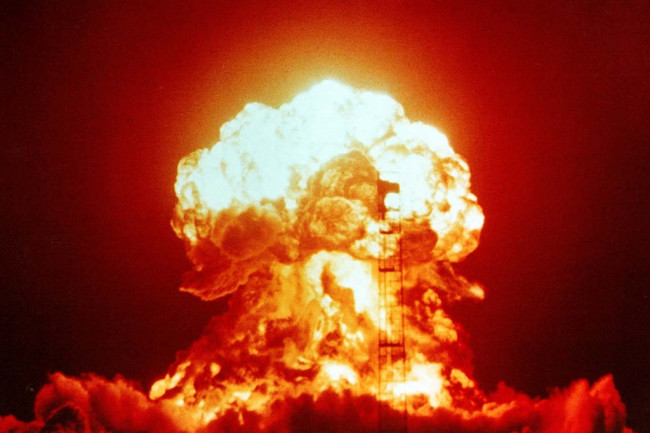

On 6th August 1945, a modified uranium gun-type bomb, “Little Boy” was dropped on Hiroshima by the United States forces. This was the first time ever a nuclear weapon had been used. The impact of this was such that 13 square kilometres of the city was destroyed and the casualties easily exceeded over 180,000.
3 days later, a 21-kilo ton plutonium device know as the-“Fat Man” was dropped on Nagasaki, marking the last nuclear attack in history killing around 220,000 people.

At the time of its bombing, Hiroshima was a city of industrial and military significance. A number of military units were located nearby, the most important of which was the headquarters of Field Marshal Shunroku Hata’s Second General Army, which commanded the defence of all southern Japan and was located in - Hiroshima Castle.
The city of Nagasaki had been one of the largest seaports in southern Japan, and was of great wartime importance because of its wide-ranging industrial activity, including the production of ordnance, ships, military equipment and other war materials.
